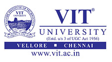

| Youth Smmit Sponsor |
| VIT University |
| 
VIT scaling dazzling heights For those aspiring to scale greater heights in technical education, the VIT is the ideal destination The travel of a student afire by a desire to pursue quality technical education ends at VIT located on the Chennai-Bangalore National Highway. The brick and mortar of the imposing building constructed on the sprawling 350 acres, having a built-up area of 4 lakh sq.m. in Vellore are speaking volumes for the successful careers of scores of students who are presently excelling in their spheres of activities all over the world. VIT is the last word on technical education par excellence. It is here, educational dreams, aspirations and ambitions rise up, nourished and at last concretized. And youngsters from various parts of the globe make up a student population of 18,366 nearly one third of them are women. VIT's roots can be traced back to 1984. Originally christened as Vellore Engineering College, it grew up into a self-financing institution with its outstanding global appeal growing with sky as a limit. Headed by Dr. G. Viswanathan (G.V), a former Parliamentarian and former Minister in the Tamil Nadu Government and promoted by the North Arcot Education and Charitable Trust, the VIT aims to promote the welfare of the students. The two letters, G.V., are synonymous with commitment and hard work and the three letters, VIT, mean quality and excellence. It is no exaggeration to say that G.V. spells Great Vision and VIT Vigour, Inspiration and Tirelessness. Mr. Sankar Viswanathan, Mr. G.V. Sampath, Mr. Sekar Viswanathan and Mr. G.V. Selvam are the Vice-Presidents and Prof. V. Raju the Vice-Chancellor. VIT's growth has been possible due to the visionary leadership of the Chancellor, Dr. G. Viswanathan, and the dynamic support of the Vice-Presidents. VIT has nine schools with 18 bachelors and 35 masters' programmes covering various disciplines such as Mechanical Engineering, B. Tech. Mechanical Engineering (specialization in Energy Engineering), B.Tech. Mechanical Engineering (specialization in Automotive Engineering), Electronics and Communication Engineering, Electrical Engineering, Computer Science, Biotechnology and what not. VIT's centrally air-conditioned Periyar EVR Central Library is spread over 54,000 sq.ft. and is recognised as one of the best information resource centres in the region. It has over 1,92,000 books, 11,354 CDs and 21,680 back volumes of scientific and technical periodicals. It also subscribes to 718 specialized journals, both Indian and foreign. VIT boasts of one of the best computing networks in South India. Its comprehensive infrastructure includes 93 Servers, 305 Workstations and 4521 clients (workstation and desktop). It is the first institution in India to implement PeopleSoft ERP System with all its modules. Research at VIT It is considered as one of the most preferred institutions for research and study. About 1278 students, including foreign students, have registered for Ph.D. programmes under various streams. The Indian Space Research Organisation (ISRO) and Indira Gandhi Centre for Atomic Research (IGCAR) have tied up with VIT for conducting continued research at the university in several disciplines. The university has secured sponsorship for 50 research projects to the tune of Rs. 100 million. Centres of Excellence Apart from the research facilities at various schools, VIT has also created several Centres of Excellence, focussed on areas of national and international importance for high end research. In partnership with the Department of Science and Technology the Government of India, VIT has set up a state-of-the-art Technology Business Incubator on campus. A Product Innovation Centre with state-of-the-art equipment for the development and testing of Biotechnology based products has been established. Placement and Training The Placement and Training Centre, headed by Prof. S.R. Pullabhotla, has placed over 2,459 students this year, which was less than 400 in 2003. IT majors like Microsoft, Oracle, etc have recruited VITians through 'Dream Offer' with packages of more than Rs. 7 lakh per year. Core companies like Maruti, Tata Motors, National Instruments, Telcon etc., have also recruited VIT students. Statistics shows that in 2004, 468 students were placed in top notch multinational companies, in 2007 the number shot upto 1518, in 2008, 1,950 and in 2009, 1960 students got recruited in companies like, Google, Intel, Cisco, CTS, HCL, iGate, TCS, Infosys, The Coca Cola company, Vestas, ICICI Bank, HDFC Bank and the list goes on. Cognizant Technology Solutions has offered placements to 1,820 students of the 2012 batch of students. Overall, 2800 students have been offered placement in 2012, with the highest offer being Rs.12.5 lakh per annum from Flipcart. VIT Alumni Association (VITAA) There are about 28,446 VIT alumni spread across the world. They have established national chapters at Chennai, Bangalore, Kolkata, Hyderabad, Delhi and Mumbai, Puducherry, Vellore and Chittoor besides Singapore, Australia, USA, Germany, UAE, Rwanda and UK. An alumni meet is organised on January 26 at the university campus every year to celebrate the annual VITAA day. STARS Dr. G. Viswanathan, the Chancellor says, “A child should not be deprived of quality education owing to poverty, and this made me think of this innovative ‘STARS’ scheme.” VIT has introduced STARS (Support The Advancement of Rural Students) which aims at providing opportunities to the underprivileged rural students to pursue quality higher education. Initially, this scheme was started in seven districts: Cuddalore, Krishnagiri, Dharmapuri, Thiruvannamalai, Kancheepuram, Villupuram and Vellore. This programme was inaugurated by Minister for School Education, Thiru. Thangam Thennarasu, on 11th December 2008 and has now grown to include the toppers of all the districts of Tamil Nadu. The VIT has many feathers on its cap, say for instance, it is the first Indian university to have obtained the coveted Accreditation Board for Engineering and Technology (ABET) accreditation from the U.S. In the first phase, two of its programmes viz., B.Tech in Mechanical Engineering and B.Tech in Civil Engineering have been accredited with the highest possible grade of NGR (Next General Review). The first Indian institution to be awarded the ISO 9002 by Det Norske Veritas of Netherland. It has won the first TVN – KIDAO - NIQR award for outstanding educational institution-2004 instituted by National Institution for Quality and Reliability. The National Assessment and Accreditation Council of the University Grants Commission has accredited the university with a B+ grade (equivalent to 5 star). VIT University was awarded ‘A’ grade by National Assessment and Accreditation Council, which put the University right on top of other universities. Last but not least, India Today has ranked VIT University as one of the top engineering institutions in the country, in its June 2008, 2009 & 2010 issues. Not with this Chancellor, Dr. G. Viswanathan, was honoured with the prestigious ‘Connect 2006 Achiever Award’ by the Confederation of Indian Industries, Chennai. Recently, the Chinese People's Association for Friendship with Foreign Countries and the China-India Friendship Association have honored G. Viswanathan with the China-India Friendship Award. He is the first Asian to be honoured with a Doctorate by West Virginia University, USA (May 2009). For Box Column: It is no exaggeration to say that G.V. spells Great Vision and VIT Vigour, Inspiration and Tirelessness. VIT’s centrally air-conditioned Periyar EVR Central Library is spread over 54,000 sq.ft. and is recognised as one of the best information resource centres in the region. |